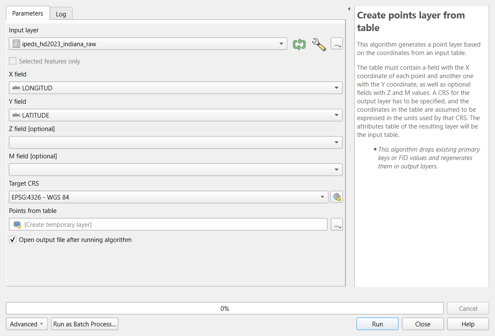
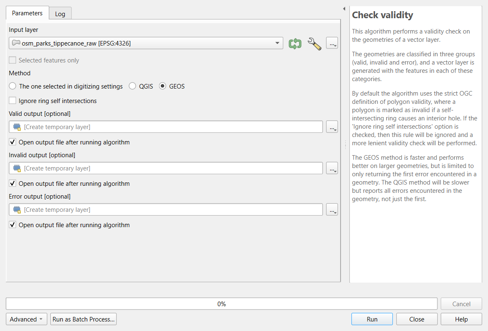

Cleaning and Preparing Data in QGIS
Last updated on 2026-10-20 | Edit this page
Estimated time: 80 minutes
Overview
Questions
- What goes wrong when raw data is used as it was downloaded?
- How do I fix types, identifiers, special codes, duplicates and geometry problems in QGIS?
- How reliable is an American Community Survey estimate?
Objectives
- Recognize the common problems of raw tables and layers, and choose a fix for each
- Use Refactor Fields to rename fields, set their types, build a GEOID and turn special codes into NULL
- Judge the reliability of ACS estimates with the coefficient of variation
- Create points from a table of coordinates and find records that share a location
- Check geometry validity, remove unwanted features, dissolve split features and confirm each step
Why cleaning comes first
Every downloaded dataset carries the habits of the system that produced it: the Census Bureau’s codes for “no estimate”, a federal directory’s codes for “not applicable”, a volunteer map’s unnamed and split features. None of these are errors in the source; they are conventions you have to know. But if you analyze the data without handling them, the software treats a code as a number, a split park as two parks, and a missing identifier as a mismatch, and it does so without any warning.
This episode cleans three raw files you will meet again later in the curriculum:
| File | Raw problems you will fix |
|---|---|
| ACS 2024 table for the 43 census tracts of Tippecanoe County, exactly as the Census API returned it | Identifiers split in three parts; numbers or text depending on the tool; codes such as -666666666; margins of error; a tract with no households |
| IPEDS directory of the 105 colleges and schools in Indiana (2023) | Coordinates in two columns; numeric category codes; -2
for “not applicable”; ZIP and ZIP+4 mixed; two pairs of colleges at the
same address |
| OpenStreetMap parks in Tippecanoe County, one feature per OSM object | Unnamed features; parks split into two features; possible invalid geometries |
The common problems
| Problem | What it looks like | Why it matters | Fix |
|---|---|---|---|
| Identifiers read as numbers | Tract 000100 becomes 100; ZIP
02138 becomes 2138
|
Joins fail or match the wrong rows | Read the column as text; rebuild with padding (zfill,
lpad) |
| Numbers read as text |
"53488" sorts before "9000"; sums are
impossible |
Sorting, statistics and maps go wrong | Convert the type (to_numeric, to_int) |
| Codes that mean “missing” |
-666666666, -2, 9999,
NA, an empty string |
Averages and maps include impossible values | Turn them into real missing values (NaN,
NULL) and count them |
| Categories stored as codes | SECTOR = 2 |
Unreadable tables and legends | Recode with the codebook (data dictionary) |
| Messy text | Trailing spaces, Purdue Univ. and
Purdue University
|
Groups and joins split one thing into two |
strip/trim, consistent case, a lookup
table |
| Duplicates | The same record twice, or two features for one object | Counts and totals inflated | Decide what makes two records the same (an ID), then remove or merge |
| Invalid geometry | A polygon whose edges cross itself | Overlays fail or give wrong areas | Check validity; repair with make_valid or Fix
Geometries |
| Wrong or missing CRS | Points near (0, 0), or a layer that lands in the ocean | Everything spatial is wrong | Define the CRS the coordinates are really in, then reproject |
Two fixes in that table are easy to confuse. Defining a CRS tells the software what the coordinates already are (it changes no numbers); reprojecting converts the coordinates to another CRS (every number changes). If a layer has no CRS, define it; if it has the right CRS but you need meters, reproject it. Defining the wrong CRS moves the layer to the wrong place on Earth.
Census annotation codes
The Census Bureau’s API returns numbers in every estimate column, so where no estimate exists it writes a large negative annotation code instead:
| Code | Meaning |
|---|---|
-666666666 |
The estimate could not be computed (too few sample cases, or nothing to compute, such as median household income where there are no households) |
-999999999 |
The estimate or margin of error cannot be shown (too few sample cases) |
-888888888 |
Not applicable |
-222222222 |
The margin of error could not be computed (too few sample observations) |
-333333333 |
The margin of error could not be computed, because the median is in
an open-ended top or bottom range (median income 250001
means “$250,000 or more”) |
-555555555 |
The estimate is controlled (fixed by design), so its margin of error is zero |
In Tippecanoe County, Census Tract 104 has 8,248 residents and
no households: it is the Purdue residence halls, where
everyone lives in group quarters. Its median household income and median
rent are both -666666666, and any rate with households as
the denominator is undefined (a division by zero). Two other tracts have
too few sample cases for one of the medians.
Margins of error and reliability
The American Community Survey asks a sample of households, so every number is an estimate with a margin of error (MOE): with 90% confidence the true value lies between estimate minus MOE and estimate plus MOE. To compare how reliable different estimates are, divide the standard error (MOE / 1.645) by the estimate:
\[CV = \frac{MOE / 1.645}{\text{estimate}} \times 100\]
The coefficient of variation (CV) is the error as a percentage of the estimate. A widely used rule of thumb: under 12% is high reliability, 12 to 40% medium, over 40% low.
Small counts are the usual problem. In Tippecanoe County, median household income has medium or high reliability in every tract, but the number of households without a car has a CV over 40% in 25 of the 42 tracts that have households. That does not make the variable useless, but it limits what you can say: map it in a few broad classes, add up tracts into larger areas, report the margins, and do not rank single tracts.
Rows you remove are decisions
Cleaning includes choices that are not fixes: keeping only degree-granting colleges, dropping unnamed park features, leaving out the residence-hall tract from a rate. Each is reasonable, and each changes the result. Write them down, with the number of rows affected, in your processing log (see the Introduction).
Check after every step
| Step | Check |
|---|---|
| Reading the file | Row count matches the source (43 tracts, 105 institutions, 80 park features) |
| Fixing identifiers | GEOIDs have 11 characters; every row joins to a boundary |
| Turning codes into missing | Count of codes before (8) and after (0); count of missing values |
| Filtering and merging | Rows before and after (105 to 70 colleges; 80 to 70 to 68 parks) |
| Making points | The points land in Indiana, in the county their record names |
| Comparing with a trusted copy | The cleaned files match those the Foundations module uses |
The same cleaning in Python
The Cleaning and Preparing Data in
Python episode cleans the same three files with pandas and GeoPandas
and reaches the same numbers. One difference is worth knowing: pandas
guesses types and reads the tract code 000100 as the number
100, while QGIS (reading the CSV through the web) reads
every column as text. The problems are opposite, and so
are the fixes.
Hands-on
These steps were checked in QGIS 4.0; in QGIS 3.34 and later the tools are the same. Keep the Processing Toolbox open (Processing > Toolbox) and use its search box to find each tool.
Add every layer with Layer > Add Layer > Add Vector Layer, Source Type: Protocol: HTTP(S), cloud, etc., Type: HTTP/HTTPS/FTP (in QGIS 4 the Type list starts with cloud services, so check it), as in the Foundations QGIS episodes. A CSV loaded this way has no geometry: it appears in the Layers panel as a table.
Part 1: Inspect the raw Census table
Add
https://raw.githubusercontent.com/SpatialTurn/DataProcessing/main/data/acs_2024_tippecanoe_tracts_raw.csv.-
Open its attribute table. Click the
B19013_001Eheader (median household income) to sort by it. The raw ACS table, sorted by median household income.
The raw ACS table, sorted by median household income.
The sort is alphabetical: 121357 comes before
12644 because QGIS read every column as
text. (The state, county and
tract columns are text too, which is what we want for them:
000100 keeps its zeros.) Scroll down and you will also find
the codes -666666666 and -222222222.
Check: 43 rows, one per tract; Layer Properties > Fields lists every field as String.
Part 2: Refactor the fields
Refactor Fields makes a new layer in which you choose each field’s name, type and contents (an expression), all in one table. The original layer is not changed.
Processing Toolbox: Refactor fields. Input layer:
acs_2024_tippecanoe_tracts_raw. The table lists the 14 original fields.-
Delete every row (select them all in the table and click Delete selected field), then add rows with the Add new field button until you have these eight. Type each Source Expression (or open the ε button to use the expression builder), then set Name and Type:
Source expression Name Type concat("state", "county", "tract")GEOIDText (string) left("NAME", strpos("NAME", ';') - 1)nameText (string) to_int("B01003_001E")popInteger (32 bit) if(to_int("B19013_001E") < 0, NULL, to_int("B19013_001E"))median_incomeInteger (32 bit) if(to_int("B19013_001M") < 0, NULL, to_int("B19013_001M"))median_income_moeInteger (32 bit) to_int("B08201_001E")householdsInteger (32 bit) to_int("B08201_002E")hh_no_vehicleInteger (32 bit) to_int("B08201_002M")hh_no_vehicle_moeInteger (32 bit) concat()joins text,to_int()turns text into a whole number, andif(condition, NULL, value)replaces a code with NULL, QGIS’s missing value.left()andstrpos()keep the part of the name before the first semicolon.![Screenshot of the QGIS Refactor fields tool. Input layer is acs_2024_tippecanoe_tracts_raw. The Fields mapping table has eight rows with columns Source Expression, Name, Type, Length and Precision: concat of state, county and tract as GEOID, Text (string), length 11; left of NAME up to the semicolon as name, Text (string), length 40; to_int of B01003_001E as pop, Integer (32 bit); an if expression on B19013_001E as median_income and on B19013_001M as median_income_moe, both Integer (32 bit); and to_int of B08201_001E, B08201_002E and B08201_002M as households, hh_no_vehicle and hh_no_vehicle_moe, all Integer (32 bit). The output, Refactored, is a temporary layer.](../cl_qgis_refactor.png) Refactor Fields with the eight output fields.
Refactor Fields with the eight output fields. Leave Refactored as a temporary layer, click Run, and rename the result
acs_clean.
Check: open the attribute table of
acs_clean. Numbers are now right-aligned and sort as
numbers; GEOID reads 18157000100 for tract 1;
median_income is NULL in two rows (tracts
104 and 105). Sorting by median_income puts the lowest real
income, 12,644, at the top.
Save the mapping
The … button beside the fields table (or the Load Fields template option) lets you reuse a mapping. For a task you will repeat, the Automating Repeated Steps episode shows how to keep the whole chain of tools as a model.
Part 3: Reliability and a safe rate
acs_clean is a temporary layer, so its Field Calculator
can add real fields.
-
Open the attribute table of
acs_cleanand the Field Calculator (abacus icon). Create these fields one at a time, each a Decimal number (real) unless stated:Field Expression income_cvround(("median_income_moe" / 1.645) / "median_income" * 100, 1)income_rel(Text)CASE WHEN "income_cv" < 12 THEN 'high' WHEN "income_cv" < 40 THEN 'medium' WHEN "income_cv" >= 40 THEN 'low' ENDno_vehicle_cvround(("hh_no_vehicle_moe" / 1.645) / nullif("hh_no_vehicle", 0) * 100, 1)pct_no_vehicleround("hh_no_vehicle" / nullif("households", 0) * 100, 1)nullif(x, 0)returns NULL whenxis 0, so a division by zero gives NULL instead of an error. Click the pencil icon to stop editing, and save.
Check: in the Statistics panel (View > Panels > Statistics) or by sorting:
-
income_relis high in 21 tracts and medium in 20 (2 are NULL); -
no_vehicle_cvis 40 or more in 25 tracts: most counts of households without a car are too uncertain to rank; -
pct_no_vehicleis NULL only for tract 104 (no households) and ranges from 0.2 to 40.7.
Part 4: Join to the boundaries and check the matches
- Add
https://raw.githubusercontent.com/SpatialTurn/Foundations/main/data/tippecanoe_tracts.geojson. - Processing Toolbox: Join attributes by field value.
Input layer:
tippecanoe_tracts, Table field:GEOID; Input layer 2:acs_clean, Table field 2:GEOID; Join type: take attributes of the first matching feature only. Run. - Open the Log tab of the tool’s dialog (or the Processing log) before closing it.
Check: the log says “43 features from input layer
were successfully matched”, and its Results line shows
'UNJOINABLE_COUNT': 0. If the GEOID had lost its zeros, or
one side were text and the other a number, this is where you would see
it. Style the result by median_income (with
Symbology > Graduated): the two NULL tracts are not
drawn, so add a gray layer of the boundaries underneath to show
them.
Part 5: Colleges from a table of coordinates
Add
https://raw.githubusercontent.com/SpatialTurn/DataProcessing/main/data/ipeds_hd2023_indiana_raw.csv(105 rows) and look at the attribute table:CLOSEDATreads-2followed by spaces, ZIP codes mix47306and47374-4019, andSECTORholds codes 1 to 9.-
Processing Toolbox: Create points layer from table. X field:
LONGITUD(x is longitude), Y field:LATITUDE, Target CRS:EPSG:4326 - WGS 84(the coordinates are in degrees). Run, and rename the resultcolleges_points.
Create Points Layer from Table. Extract by attribute: Input layer
colleges_points, Selection attributeDEGGRANT, Operator=, Value1. Rename the resultcolleges.
Check: 105 points, all inside Indiana; 70 degree-granting colleges.
Part 6: Same place, same college?
-
With
collegesselected in the Layers panel, click Select Features by Expression (the ε icon with a yellow square) and enter:count(@id, group_by := geom_to_wkt($geometry)) > 1It counts the features at each exact location and selects those that share one.
Click Select Features, then open the attribute table and choose Show Selected Features.
Check: 4 selected: Trine University and its regional
campus, and Indiana Institute of Technology and its College of
Professional Studies. They are four different institutions (four
different UNITIDs) at two addresses. QGIS’s Delete
duplicate geometries tool would remove two of them, so do not
use it here.
- For a last check, run Join attributes by location:
Join to features in
colleges, where the features are within, by comparing to the Indiana counties (https://raw.githubusercontent.com/SpatialTurn/Foundations/main/data/indiana_counties.geojson), fields to add:fips. In the result, Select by Expression"fips" <> "COUNTYCD": 0 features. Every college lies in the county its record names.
Part 7: Parks from OpenStreetMap
Add
https://raw.githubusercontent.com/SpatialTurn/DataProcessing/main/data/osm_parks_tippecanoe_raw.geojson: 80 features.-
Processing Toolbox: Check validity. Input layer: the parks; Method: GEOS. Run.

The Check Validity tool.Check: the Valid output has 80 features, the Invalid output 0. If there were invalid features, Fix geometries would repair them; check the repaired shapes on the map.
Extract by expression:
"name" IS NOT NULL. Check: 70 features (10 unnamed removed).Vector > Geoprocessing Tools > Dissolve, Dissolve field(s):
name. Check: 68 parks: McAllister Park and Triangle Park, each mapped as two features, are now one.Reproject Layer to EPSG:26916, and in the Field Calculator add
area_ha, a decimal field,area($geometry) / 10000. Check: the largest is Ross Hills Park, about 143.5 ha, then McAllister Park, about 105 ha.
The result has the same 68 parks as the parks file the Foundations and Case Studies modules use.
Challenge 1: The rent columns
Run Refactor fields on the raw table again, this
time adding median_rent and median_rent_moe
from B25064_001E and B25064_001M (with the
same if(... < 0, NULL, ...) pattern). How many tracts
have no rent estimate, and which?
Two: tract 16.01 (too few renters in the sample) and tract 104 (no
households). Their raw values are -666666666 (estimate) and
-222222222 (margin of error). The Refactor Fields dialog
remembers its last mapping, so you only add two rows.
Challenge 2: Rank the tracts?
A news story wants to name “the five tracts in Tippecanoe County with
the most households without a car”. In acs_clean, sort by
hh_no_vehicle: tracts 55 (909, MOE 289), 4 (666, MOE 291),
112 (425, MOE 168), 102.08 (411, MOE 211) and 111 (384, MOE 179). Is the
ranking sound?
Not as a strict ranking. Tract 111 could have as many as 384 + 179 = 563 households without a car and tract 4 as few as 666 - 291 = 375, so second and fifth place could swap, and places 3 to 5 are hard to tell apart. The sixth tract (7, with 341 plus or minus 164) could belong in the list too. Say that these tracts have among the highest numbers and report the margins.
Challenge 3: Define or reproject?
You receive a CSV of community centers with columns x
and y holding values such as 506512 and
4475023, and the provider says they are “UTM zone 16N,
NAD83”. What do you choose in Create points layer from
table?
The values are meters, so the Target CRS is EPSG:26916 (NAD83 / UTM zone 16N): that defines what the coordinates are. Choosing EPSG:4326 would place the points at longitude 506,512, which does not exist. If you later need degrees, Reproject Layer converts them.
- Inspect before changing anything: sorting a column quickly shows text that should be numbers and special codes
- Refactor Fields renames fields, sets their types and fills them with expressions in one step, without changing the original
-
to_int(),if(... < 0, NULL, ...)andnullif(x, 0)handle text numbers, codes and division by zero - ACS estimates have margins of error; the coefficient of variation shows which are too uncertain to rank
- Create points from coordinates with the CRS they are in; decide what makes two records the same before deleting
- Check validity, remove unwanted features and dissolve split ones, and confirm each step with a count